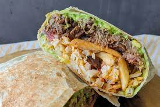

California burritos

Description
California burritos are arguably the best burritos in the world. They are stuffed with thinly sliced, tender marinated carne asada, cheese, salsa, avacado crema and Mexican french fries. These California burritos are also freezer friendly, for an easy bake and serve dinner.
Ingredients
- tortillas
- carne asada
- cheese
- french fries
- salsa
- avocado crema
Steps
- Whisk together ground cumin, garlic powder, smoked paprika, salt, chili powder, onion powder, pepper, cayenne pepper. Add 3 tablespoons to a freezer bag and reserve the rest for later. Add olive oil, reduced sodium soy sauce, orange juice, lime juice, brown sugar and liquid smoke. Add steak and seal bag, removing excess air. Marinate in the refrigerator 4-12 hours.
- Add 2 avocados, sour cream, mayonaise, lime juice, salt, cumin, and garlic powder to your blender and process until smooth. Store in the refrigerator until ready to use.
- Toss sliced potatoes with olive oil, cornstarch, and seasonings. Spread potatoes evenly over prepared baking sheet and bake for 20 minutes then toss, stir, and rearrange fries in a single layer and bake for an additional 10 minutes. If you like crispier fries, then broil until golden and crispy.
- Grill pineapple for 6-8 minutes per side or until lightly charred and caramelized. Chop pineapple and discard each core. Grill marinated carne asada for 5-6 minutes per side, or until an internal thermometer reads 130-135 degrees F for medium rare or around 140 degrees for medium. Meanwhile, wrap tortillas in foil and place in a preheated 350F degree oven for 10 minutes.
- To assemble, layer carne asada in center of each burrito followed by fries, cheese, avocado crema, salsa, then pineapple. Fold in top and bottom and roll tightly in burrito style. Garnish burritos with extra avocado crema, salsa, and hot sauce to taste.